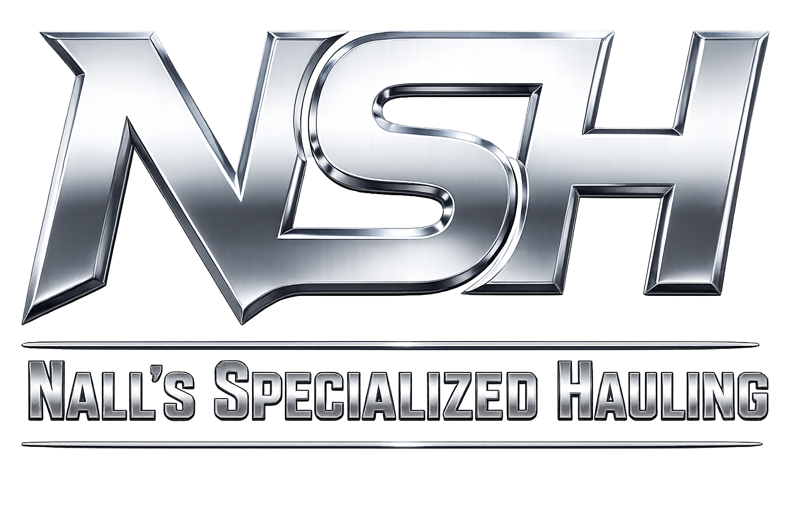

Preventive Maintenance
Scheduled service intervals, documented repairs, and road-readiness checks across power units and trailer configurations.

Specialized freight only works when the equipment is ready before the call comes in. Our shop supports the trucks, trailers, brakes, tires, lights, and securement gear that keep heavy haul and regional freight moving safely.
A late truck is expensive. A poorly maintained truck is worse. The Nall's maintenance program is built around inspection, prevention, and fast response so equipment does not become the weak link in a critical move.
Scheduled service intervals, documented repairs, and road-readiness checks across power units and trailer configurations.
Inspection and support for flatbeds, step decks, double drops, extendables, dry vans, and specialized trailer equipment.
Brake, tire, light, coupling, and securement inspections tied directly to DOT compliance and company safety standards.
When a carrier handles oversized and high-value freight, the truck and trailer cannot be an afterthought. Equipment selection, shop sign-off, and securement planning all affect whether a load clears the route and arrives in the condition the customer expects.
That is why our maintenance operation works closely with dispatch, safety, and drivers. The shop is not just where repairs happen. It is where the next safe mile starts.
See Specialized EquipmentThe best maintenance program is the one customers rarely notice because the equipment shows up ready, compliant, and suited to the load.
Drivers and shop personnel document issues before they become roadside problems.
Defects are handled before dispatch whenever they affect safety, compliance, or load protection.
Maintenance records support compliance, accountability, and better long-term fleet planning.
Send the dimensions, weight, route, and timing. We will match the equipment, confirm the plan, and move the freight with the care it deserves.
Yes. Nall's Specialized Hauling supports its power units and trailers through an in-house maintenance program and shop team.
In-house maintenance helps keep trucks, trailers, brakes, tires, lights, securement equipment, and specialized trailers inspected and road-ready before dispatch.
Call 270-360-0070 or contact the staff directory for the shop leadership team.